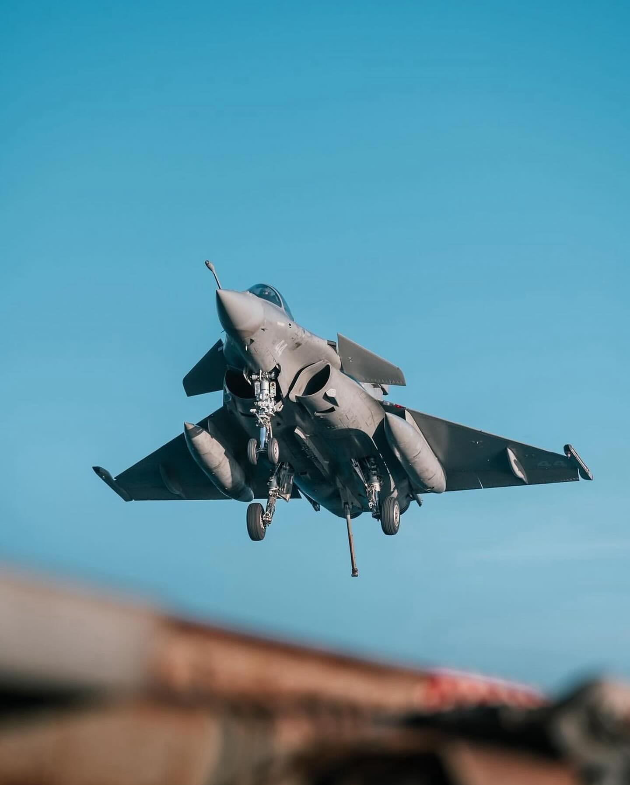
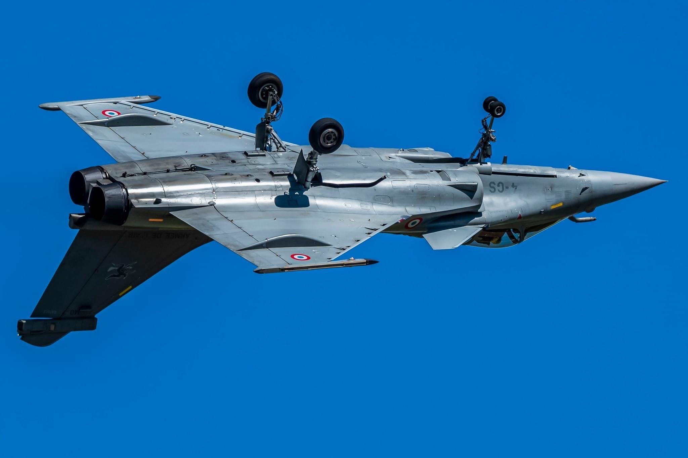
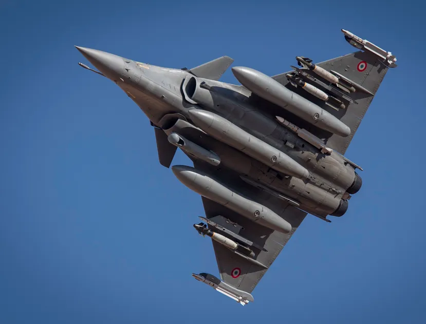

1. Présentation générale
Le Dassault Rafale est un avion de combat multirôle développé par le constructeur aéronautique français Dassault Aviation. Il a été conçu pour répondre aux besoins de l'armée de l'Air française et de la Marine nationale.
Il possède une configuration aérodynamique caractéristique avec une aile delta et deux plans canards situés près du cockpit. Cette configuration lui permet d'obtenir une grande maniabilité et de bonnes performances en vol.
Le Rafale est qualifié d'avion « omnirôle », car il peut réaliser différentes missions au cours d'une même sortie aérienne.
2. Histoire et développement
Le développement du Rafale trouve son origine dans les réflexions françaises sur le remplacement des avions de combat des générations précédentes.
Dans les années 1980, la France lance le programme ACX afin de développer un nouvel avion de combat indépendant des autres programmes européens.
Le démonstrateur Rafale A effectue son premier vol le 4 juillet 1986. Les prototypes de la version de série suivent au début des années 1990.
Le Rafale entre progressivement en service dans les forces françaises : la Marine nationale reçoit ses premiers appareils opérationnels en 2004, puis l'armée de l'Air en 2006.
3. Caractéristiques techniques
| Constructeur | Dassault Aviation |
|---|---|
| Pays d'origine | France |
| Type | Avion de combat multirôle |
| Premier vol du démonstrateur | 4 juillet 1986 |
| Premier vol d'un Rafale de série | 1991 |
| Mise en service Marine | 2004 |
| Mise en service Air | 2006 |
| Équipage | 1 ou 2 personnes |
4. Dimensions et performances
| Longueur | 15,30 m |
|---|---|
| Envergure | 10,90 m |
| Hauteur | 5,30 m |
| Masse à vide | Environ 10 tonnes |
| Masse maximale au décollage | 24,5 tonnes |
| Vitesse maximale | Mach 1,8 |
| Plafond opérationnel | 50 000 pieds (environ 15 240 m) |
| Charge externe maximale | 9,5 tonnes |
| Points d'emport | 14 |
Les valeurs peuvent varier selon la version et la configuration de l'appareil.
5. Motorisation
Le Rafale est propulsé par deux turboréacteurs Safran Aircraft Engines M88.
Chaque moteur développe une poussée maximale d'environ 75 kN avec postcombustion.
| Motoriste | Safran Aircraft Engines |
|---|---|
| Moteur | M88 |
| Nombre de moteurs | 2 |
| Poussée maximale | 2 × 75 kN |
6. Équipements et avionique
Le Rafale possède un ensemble d'équipements électroniques destinés à faciliter la détection, l'identification et le suivi des menaces.
- Radar RBE2 à antenne active AESA sur les versions modernisées.
- Système de guerre électronique et de protection SPECTRA.
- Capteur optronique frontal OSF.
- Systèmes de navigation et de communication intégrés.
- Liaison de données tactiques.
7. Missions principales
- Supériorité aérienne.
- Défense aérienne.
- Interception.
- Reconnaissance aérienne.
- Attaque au sol.
- Appui aérien rapproché.
- Attaque maritime.
- Dissuasion nucléaire française.
- Ravitaillement en vol entre Rafale.
8. Les différentes versions
Rafale C
Version monoplace destinée à l'armée de l'Air et de l'Espace française.
Rafale B
Version biplace terrestre permettant d'accueillir un pilote et un second membre d'équipage.
Rafale M
Version navalisée conçue pour opérer depuis les porte-avions. Elle dispose notamment d'une crosse d'appontage et d'un train d'atterrissage renforcé.
9. Utilisateurs à l'exportation
En plus de la France, plusieurs pays ont commandé le Rafale pour équiper leurs forces aériennes.
- Égypte
- Qatar
- Inde
- Grèce
- Croatie
- Émirats arabes unis
- Indonésie
- Serbie
10. Galerie photographique


